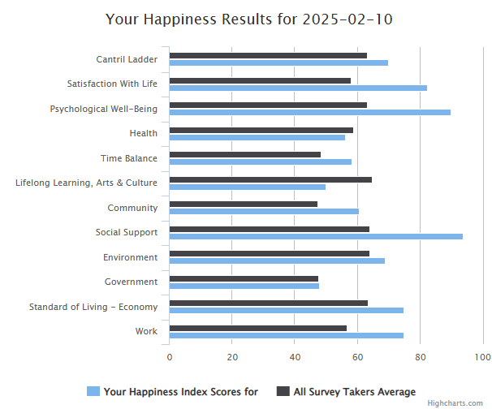

7 Defining, operationalizing and measuring concepts
7.1 Learning objectives
- Understand the concepts of operationalization and measurement.
- Understand the four basic scales of measurements.
- recognize the different types of measurement errors.
- Understand the concepts of validity and reliability.
7.2 Defining and operationalizing concepts
The operationalization of concepts is the process through which an abstract concept (construct) like learning, pain, happiness, success, quality, etc. is made observable and measurable Fortin and Gagnon (2016).
7.2.1 Indicators
In order to measure the unmeasurable, we produce proxies (or indicators): quantifiable and measurable expressions of the different dimensions of a construct.
Table 1. Examples of operational definitions in bibliometrics.
| Definition | Operational definition (proxy) |
|---|---|
| Research output | Publication counts |
| Research impact | Citation counts |
| Collaboration | Co-authorship |
| Social impact | Mentions in the news, social media, policy, etc. |
| Discipline | Department affiliation? Classification of journals? |
| Multidisciplinarity | - Number of disciplines represent in a team? - Number of disciplines represented in a reference list? |
7.2.2 Indices
An index, or indices is typically a measure that combines multiple indicators to capture to measure a multidimensional construct in a single measure. An example from bibliometrics is the h-index. Another example is the happyness index. The dimensions of the happiness index: (Musikanski et al. 2017)
- Psychological Well-Being: optimism, senses of purpose and of accomplishment;
- Health: energy level and ability to perform everyday activities;
- Time Balance: enjoyment, feeling rushed, and sense of leisure;
- Community: sense of belonging, volunteerism, and sense of safety;
- Social Support: satisfaction with friends and family, feeling loved, and feeling lonely;
- Education, Arts, and Culture: access to cultural and educational events and diversity;
- Environment: access to nature, pollution, and conservation;
- Governance: trust in government, sense of corruption, and competency;
- Material Well-Being: financial security and meeting basic needs; and
- Work: compensation, autonomy, and productivity.

7.3 Measuring concepts
The measure is the observation. It’s the value that is stored in a cell in a spreadsheet.
7.4 Measurement scales
Table 2. Summary of characteristics of the four measurement scales.
| Labels | Meaningul order | Proportional intervals | Captures absolute value of 0 | |
|---|---|---|---|---|
| Nominal scale | X | |||
| Ordinal scale | X | X | ||
| Interval scale | X | X | X | |
| Ratio scale | X | X | X | X |
7.4.1 Nominal scale
The nominal scale uses categories (labels) to classify objects, events, people, etc. The categories should be:
- Exhaustive: it should be possible to assign all observations to one of the categories.
- Mutually exclusive: no observations can be assigned to more than one category.
The nominal scale reflects qualitative differences between categories and has no quantitative value.
A dichotomous variable (yes/no, true/false) is an example of the nominal scale, there are only two categories possible and they are mutually exclusive.
7.4.2 Ordinal scale
The ordinal scale introduces the notion of order or rank to the categories. It does not measure concepts in an absolute sense but in a relative sense (relative to the other categories). A Likert scale(Likert 1932) like this is an example:
- Strongly disagree
- Disagree
- Neither agree nor disagree
- Agree
- Strongly agree
7.4.3 Interval scale
In an interval scale, the categories are not only distinct and ranked, but they are represented with units of measurement (meters, grams, degrees, seconds, litres, years, pages, etc.). This is a purely quantitative scale that uses numbers that are continuous and equidistant. The values are still relative, rather than absolute, and the zero is arbitrary and does not represent the absence of a phenomenon.
7.4.4 Ratio scale
The ratio (or proportion) scale has all the features of the other three but is absolute and has a true zero (the absence of the measured thing), and cannot be negative.
7.5 Measurement errors
7.5.1 Type I and type II errors
| Negative in reality | Positive in reality | |
|---|---|---|
| Negative measurement | True negative | False negative (type II error) |
| Positive measurement | False positive (type I error) | True positive |
7.5.2 Random errors
Random errors are inaccurate measurements that happen by chance. They are caused by a wide range of factors that can affect the precision of a measurement. They are the noise in the signal. Random errors happen. To ensure they do not overly affect your measure/perception, a solution (if the study design and resources allow it) is to make more measurements, possibly at different times depending on the suspected source of the noise, so that the errors average out. This is part of the reason why large enough samples are needed to achieve statistical power and produce meaningful results!
7.5.3 Systematic errors
Systematic errors affect the accuracy of measurements. They are not random and occur because of the faulty instrument or the inadequate use of an an instrument. For example, in bibliometrics research we use a databases that have a better coverage of scholarly outputs in journal form (so we systematically fail to measure other forms of research dissemination) published in english, in the global north and by large companies (so we systematically underestimate knowledge production, dissemination and use in some area, language, etc.). You can also think of a survey or an interview guide that asks a flawed question, or does not cover an important dimension of the phenomenon.
7.5.4 Validity and reliability of instruments
in construction….
7.5.5 Reliability of instruments
in construction….
7.5.6 Precision and accuracy
in construction….